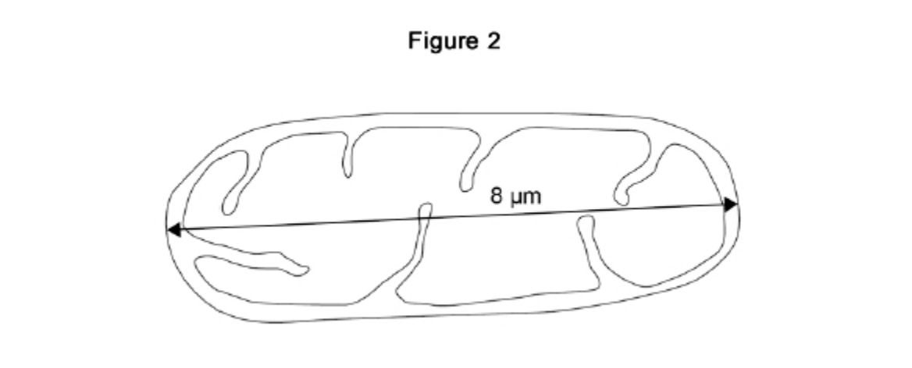

.svg)

.svg)


Cell Structure
23 questions
Question 1
Figure 1 shows a cell.
Length = 1.5 µm
What type of cell is shown in Figure 1?
Tick one box.
The cell in Figure 1 contains ribosomes.
What is the function of ribosomes?
There are 1000 micrometres (µm) in a millimetre (mm).
The length of the cell in Figure 1 is 1.5 micrometres (µm).
Give the length of the cell in millimetres (mm).
Question 2
Figure 2 shows a mitochondrion viewed with a microscope.

Give one reason why the cell in Figure 1 does
not contain mitochondria.
Question 3
The cell in Figure 1 divides once every 30 minutes.
Table 2 shows how many cells are present after a given time.
Table 2
| Time in minutes | Number of cells present |
|---|---|
| 0 | 1 |
| 30 | 2 |
| 60 | 4 |
Calculate how many cells will be present after 2 hours.
Question 4
Cells like the one in Figure 1 are kept in a culture solution for
25 hours.
The graph below shows the number of live cells present.
Describe the changes in the number of live cells shown in the
graph above in the first 20 hours.
Use data from the graph in your answer.
Suggest one reason why the number of live cells decreases after 20 hours.
Question 5
The diagram below shows a cell from a plant leaf.
(showing Cytoplasm, Cell membrane, Cell wall, Chloroplast, Nucleus)
Which two parts in the diagram above are not found in an animal cell?
Question 6
Human cells and yeast cells have some parts that are the same.
Many types of cell can divide to form new cells.
Some cells in human skin can divide to make new skin cells.
Why do human skin cells need to divide?
Question 7
Human stem cells can develop into many different types of human cell.
Use the correct answer from the box to complete the
sentence.
[ embryos | hair | nerve cells ]
Human stem cells may come from _____
Use the correct answer from the box to complete the
sentence.
[ cystic fibrosis | paralysis | polydactyly ]
Human stem cells can be used to treat _____
Question 8
The image below shows some muscle cells from the wall of the stomach, as seen through a light microscope.
(showing Mitochondria, 0.1 mm scale bar)
Describe the function of muscle cells in the wall of the stomach.
The muscle cells in Figure above contain many mitochondria.
What is the function of mitochondria?
The muscle cells also contain many ribosomes. The ribosomes
cannot be seen in the figure above.
What is the function of a ribosome?
Suggest why the ribosomes cannot be seen through a light microscope.
Question 9
Figure 1 shows a human cheek cell viewed under a light microscope.
Cheek cells are a type of body cell.
Body cells grow through cell division.
What is the name of this type of cell division?
Tick one box.
Ribosomes and mitochondria are not shown in
Figure 1.
What type of microscope is needed to see ribosomes and
mitochondria?
What is the advantage of using the type of microscope you
named in part (c)?
Tick one box.
A red blood cell is 8 µm in diameter.
A bacterial cell is 40 times smaller.
Calculate the diameter of the bacterial cell.
Tick one box.
Question 10
The image below shows part of a root from a cress plant.
What type of microscope was used to create the image above?
Root hair cells take up water from the soil.
Explain one way in which the root hair cell
is adapted to this function.
The table shows the water uptake by a plant's roots on two different days.
| Day | Mean water uptake in cm³ per hour |
|---|---|
| Cold day | 1.8 |
| Hot day | 3.4 |
Explain why the mean rate of water uptake is higher on a hot day than on a cold day.
The concentration of mineral ions in the soil is lower than in
root hair cells.
Root hair cells take up mineral ions from the soil.
Root hair cells contain mitochondria.
Explain why root hair cells contain mitochondria.